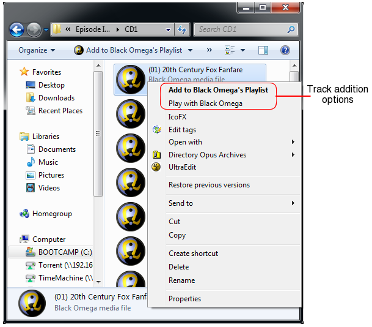

By assigning a supported file type to Black Omega then from within Windows Explorer you can either
Both options are available from the context menu of the file. The default behavior for when you double click on the file is set in the File Association section of the Preferences dialog.
Black Omega also integrates into the Windows Explorer context menu for directories such that it's contents can be appended to your playlist.
